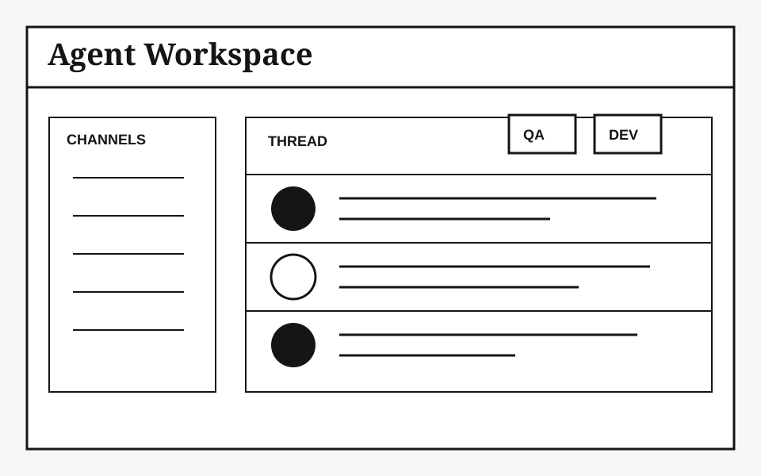

Personal Dispatch
AI Native Growth Notes
这里是 @党浩晨 的 blog。现在在 TikTok Monetization 做策略，持续记录 AI、增长、 agent workspace 和一些有趣的项目/产品。

Personal Dispatch
这里是 @党浩晨 的 blog。现在在 TikTok Monetization 做策略，持续记录 AI、增长、 agent workspace 和一些有趣的项目/产品。

一个追踪外部新闻的 bot，覆盖微信公众号 RSS 与网页 tracking，用来服务 AI native growth 新闻追踪。
原始材料中包含项目名称和用途，未附更多正文。
原始材料中已收录标题：2026.7.5 affiliate program 增长。
这条内容目前只有标题，正文尚未在附件中展开。
最近一个月，slock.ai 是我用得最频繁的一个产品。这个产品最早是蓝驰的一位投资人朋友提到的。 试用几天以后，很快进入了一个状态：每天都会深度用一个多小时，而且不是那种刷一刷，而是真的在用它推进项目。
后来知道这是一个人公司做出来的，更加觉得这个产品确实很 AI native。因为它不是在原有 SaaS 上硬加一个 AI 功能， 而是从第一天开始，就把“人和 agent 一起工作”当成默认前提在设计。
slock.ai 让我第一次觉得，这三件事被放进了同一个解法里。在 slock 上部署自己的 agent 大概需要两个动作： 先连接电脑设备，再把已经安装的各种 CLI agent 接入 slock，选择设备、CLI agent 和具体 model。
slock.ai 本质上是一个让人和 AI agent 在同一个工作空间里协作的平台。它最有意思的点不是又多了一个 agent， 而是它把 agent 从“一个单独的工具”变成了“一个可以持续协作的成员”。
超级 agent 当然会存在，而且会越来越强。但在真实工作里，问题并不是“有没有一个 agent 足够聪明”，而是 “一个复杂任务能不能被稳定推进到完成”。
一个单体 agent 最大的问题，是它天然会把所有事情揉进同一个上下文里。需求理解、方案选择、代码实现、debug、 review、写文档、解释结果，全在一个 conversation 里完成。刚开始很顺，越往后越容易出问题。
多 agent 团队的一个重要价值，就是能够让我们在流程里引入一个很朴素的工程思想：V-model。 它的核心是不能等系统全部做完以后，才开始问它是不是对的。每一层设计，都应该对应一层验证。
一个极强的 CLI agent 可以自我纠错，但这有点像让同一个人写完方案以后，自己给自己做独立审计。 如果一开始理解错了，后面的实现和 review 都会沿着这个错误继续往下走。
问题不是“agent team 会不会取代超级 agent”，而是：在同样的预算、同样的 token、同样的时间里， 到底应该把资源押在一个超级 agent 上，还是押在一个 agent team 上？
我的判断是，超级 agent 追求的是单点智能最大化；agent team 追求的是系统可靠性最大化。 边界清楚、反馈很快、验证简单的任务，用超级 agent；跨文件、跨工具、跨设备、跨上下文、需要 review 和持续迭代的任务， 用 agent team。
《Rethinking the Value of Multi-Agent Workflow: A Strong Single Agent Baseline》对 Multi-Agent 的价值提出了一个重要校准： 并不是 Agent 数量越多，系统能力就越强。
无效的 Multi-Agent Team，通常是“能力同质 + 职责切碎 + 平级协作 + 上下文反复转述”的组合。 真正有效的 Multi-Agent 不应该只是“多个同模型 Agent 群聊”，而应该引入 Single Agent 无法自然获得的新能力： 异构能力互补、并行搜索、独立上下文隔离、外部专业系统或工具接入，以及被主 Agent 明确调度和收敛的专家 Skill / SubAgent。
《Towards a science of scaling agent systems: When and why agent systems work》则认为，Multi-Agent 在可并行任务上可能显著提升表现， 但在强顺序依赖任务上会因为沟通成本、上下文碎片化和协调开销导致性能下降。
2004 年 4 月 1 日，Google 发布了 Gmail。这个时间点本身就很有意思，愚人节发布，很多人一开始以为是恶作剧。 但 Gmail 给出的产品参数完全不像开玩笑。
产品本身是降维打击级别的。而 Gmail 在发布时选择了邀请制：用户只能通过邀请码注册，每人持有的邀请码数量极为有限。 结果是，Gmail 邀请码在 eBay 上被炒到了 100 美元以上。
Gmail 的案例不是偶然。如果拆解邀请码机制背后的增长逻辑，会发现它构成了一个自强化飞轮： 稀缺感 → 社交货币 → 裂变触达 → 数据口碑积累 → 产品体验提升 → 更强的稀缺感与飞轮加速。
邀请码不是魔法。它适合冷启动，不适合长期依赖。Clubhouse 是最典型的反面教材。 2020 年底到 2021 年初，Clubhouse 一码难求，短时间内用户数从 60 万涨到 200 万，估值冲到 10 亿美元。
但问题是，Clubhouse 的产品本身没有足够的留存价值来承接这波流量。当稀缺感逐渐消退， 用户发现自己没有理由继续打开这个 App。
邀请码帮 Clubhouse 飞到了不属于它的高度。但没有产品价值做降落伞，掉下来只是时间问题。
最近硅谷最火的一个词，不是 Agent，不是 Vibe Coding，而是一个听起来很朴素的词：Harness Engineering。 OpenAI 在今年 2 月公开了一个事实：他们内部有一个产品，超过 100 万行代码，没有一行是人写的。
三个工程师，平均每人每天合并 3.5 个 PR，全部由 Codex Agent 完成。工程师的工作不是写代码， 而是设计一套让 AI 能够可靠写代码的系统。这套系统，就叫 Harness。
“Harness”的本义是马具：缰绳、马鞍、嚼子，一整套驾驭一匹强壮但不可预测的马的装备。 在 AI 语境下，模型是那匹马，Harness 是那套马具。
Harness 不是某个具体产品或框架，而是一种工程方法论：围绕模型构建的一切。OpenAI 自己的总结是： “我们最困难的挑战，已经不再是写代码，而是设计环境、反馈回路和控制系统。”
这不是一篇理论文章。OpenAI 用五个月真正建了一个有内部日活用户的产品。以下是他们踩过的坑和总结的实践。
上下文管理：给 Agent 一张地图，不是一本百科全书。他们最早犯的错误是写了一个巨大的 AGENTS.md， 试图把所有规则都塞进去。失败了，因为上下文是稀缺资源，大文件挤占真正重要的信息；当所有东西都重要时，什么都不重要。
解决方案是把 AGENTS.md 缩到约 100 行，只当“目录”用，指向结构化的 docs/ 目录： 设计文档、执行计划、产品规格、架构说明、质量评分，这才是唯一真实来源。
让应用本身对 Agent 可读：OpenAI 不仅让代码库对 Agent 可读，还让正在运行的应用对 Agent 可读， 接入 Chrome DevTools Protocol 让 Agent 截图、拿 DOM 快照、直接验证 UI 行为。
这是一个技术话题，但方法论层面的启示跨领域。“Agent 失败是系统的 bug”。 用 AI 辅助增长时，如果输出质量差，长期应该问：到底缺了什么环境定义？
工作正在上移一层抽象。未来增长专家也许类似 harness 系统工程师：排优先级、翻译意图为标准、验证结果。